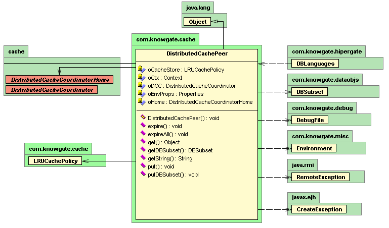

public final class DistributedCachePeer
extends java.lang.Object
Distributed Cache Local Peer
Each distributed cache peer holds its own local copy of cached data.
On the simplest scenenario there is only one client cache peer witch stores data localy for faster access and reduce network bandwitch consumption.
As data is kept localy at each peer, when more than one client peer concurrently access the same data, a cache coordinator becomes necessary.
The cache coordinator is an EJB that must be installed at an application server such as JBoss or BEA Weblogic. See cache.DistributedCacheCoordinatorBean for more information about the cache coordinator.
Distributed Cache Tokens and Policies
A cache peer is essentially a named set of objects. Each object name is called a "cache token". Cache Token associate a String (the object name) with the actual cached object.
Token have an usage count and a last usage date, each time a token is requested its usage count and last usage dates are updated at the cache peer.
The cache peer the applies a customizable Policy for discarding objects as cache becomes full.
Currently only a Least Recently Used Cache Policy is provided.
By default the cache has a maximum of 400 objects slots.
There is no checking of memory consumption for the cache peer, it is the programmer's responsability not to cache objects that are too large.
It is also the programmer's task to remove tokens from the cache peer when the cached data has been changed.
Comunnication between client cache peers and the cache coordinator
The cache coordinator is a single object instance that coordinates data cached by multiple cache peers, at a given time a cache peer may change data that is already cache at another peer. When doing so the last usage date for the token of cached data will be updated and the cache coordinator will be notified of this last usage change.
Each cache peer holds its own copy of data, and the cache coordinator keeps a record of all last usage timestamp for every object at every cache peer. In this way, cached data is not be shared among peers, but it is kept synchronized by discarding all tokens witch timestamp at the peer is older than the one at the cache coordinator.
UML
| Constructor and Description |
|---|
DistributedCachePeer()
Create a local cache peer.
|
| Modifier and Type | Method and Description |
|---|---|
void |
expire(java.lang.String sTokenKey)
Removes an Object from the cache and notify other cache peers that
the objects with the given token should no longer be considered valid.
|
void |
expireAll()
Remove all objects from local cache and expire then and cache coordinator.
|
java.lang.Object |
get(java.lang.String sTokenKey)
Get an object from the cache peer.
|
java.lang.Boolean |
getBoolean(java.lang.String sTokenKey) |
DBSubset |
getDBSubset(java.lang.String sTokenKey) |
java.lang.Float |
getFloat(java.lang.String sTokenKey) |
java.lang.Integer |
getInteger(java.lang.String sTokenKey) |
java.lang.String |
getString(java.lang.String sTokenKey) |
java.util.Set |
keySet()
Return keys for entries in cache
|
void |
put(java.lang.String sTokenKey,
java.lang.Object oObj)
Puts an Object into local cache.
|
void |
putDBSubset(java.lang.String sTableName,
java.lang.String sTokenKey,
DBSubset oDBSS)
Puts a DBSubset into local cache.
|
int |
size()
Number of entries in cache
|
public DistributedCachePeer()
throws java.lang.InstantiationException,
java.rmi.RemoteException
Create a local cache peer.
The cache peer may be initialized to work in single-peer mode or in multi-peer mode with a cache coordinator.
Initializacion properties for connecting with the cache coordinator when working in multi-peer mode are passed in appserver.cnf properties file. The appserver.cnf file is read using the singleton Environment object at com.knowgate.misc package.
An example of a configuration file for JBoss may be as follows:
#DistributedCachePeer JBoss configuration fileAn example of a configuration file for Tomcat may be as follows:
#DistributedCachePeer Tomcat configuration filejava.lang.InstantiationExceptionjava.rmi.RemoteExceptionEnvironmentpublic java.lang.Object get(java.lang.String sTokenKey)
throws java.rmi.RemoteException,
java.lang.NullPointerException
sTokenKey - Token of object to be retrievedjava.rmi.RemoteExceptionjava.lang.NullPointerExceptionpublic DBSubset getDBSubset(java.lang.String sTokenKey) throws java.rmi.RemoteException, java.lang.ClassCastException
DBSubset.java.lang.ClassCastExceptionjava.rmi.RemoteExceptionpublic java.lang.String getString(java.lang.String sTokenKey)
throws java.rmi.RemoteException,
java.lang.ClassCastException
sTokenKey - Token of string value to be retrievedjava.lang.ClassCastExceptionjava.rmi.RemoteExceptionpublic java.lang.Boolean getBoolean(java.lang.String sTokenKey)
throws java.rmi.RemoteException,
java.lang.ClassCastException
sTokenKey - Token of boolean value to be retrievedjava.lang.ClassCastExceptionjava.rmi.RemoteExceptionpublic java.lang.Float getFloat(java.lang.String sTokenKey)
throws java.rmi.RemoteException,
java.lang.ClassCastException
sTokenKey - Token of float value to be retrievedjava.lang.ClassCastExceptionjava.rmi.RemoteExceptionpublic java.lang.Integer getInteger(java.lang.String sTokenKey)
throws java.rmi.RemoteException,
java.lang.ClassCastException
sTokenKey - Token of integer value to be retrievedjava.lang.ClassCastExceptionjava.rmi.RemoteExceptionpublic java.util.Set keySet()
public void put(java.lang.String sTokenKey,
java.lang.Object oObj)
throws java.lang.IllegalStateException,
java.lang.IllegalArgumentException,
java.rmi.RemoteException
Puts an Object into local cache.
sTokenKey - Token for objectoObj - Object to be stored.java.rmi.RemoteExceptionjava.lang.IllegalArgumentException - If either sTokenKey or oObj is null.java.lang.IllegalStateException - If object with given token is already present at local cache.public void putDBSubset(java.lang.String sTableName,
java.lang.String sTokenKey,
DBSubset oDBSS)
throws java.rmi.RemoteException
Puts a DBSubset into local cache.
sTokenKey - Token for objectoObj - Object to be stored.java.rmi.RemoteExceptionjava.lang.IllegalArgumentException - If either sTokenKey or oObj is null.java.lang.IllegalStateException - If object with given token is already present at local cache.public void expire(java.lang.String sTokenKey)
throws java.lang.IllegalArgumentException,
java.rmi.RemoteException
sTokenKey - Token of object to be removed from local cache.java.rmi.RemoteExceptionjava.lang.IllegalArgumentException - If sTkeney is null.java.lang.IllegalStateException - If local cache is empty.public void expireAll()
throws java.rmi.RemoteException
Remove all objects from local cache and expire then and cache coordinator.
java.rmi.RemoteExceptionpublic int size()
Number of entries in cache